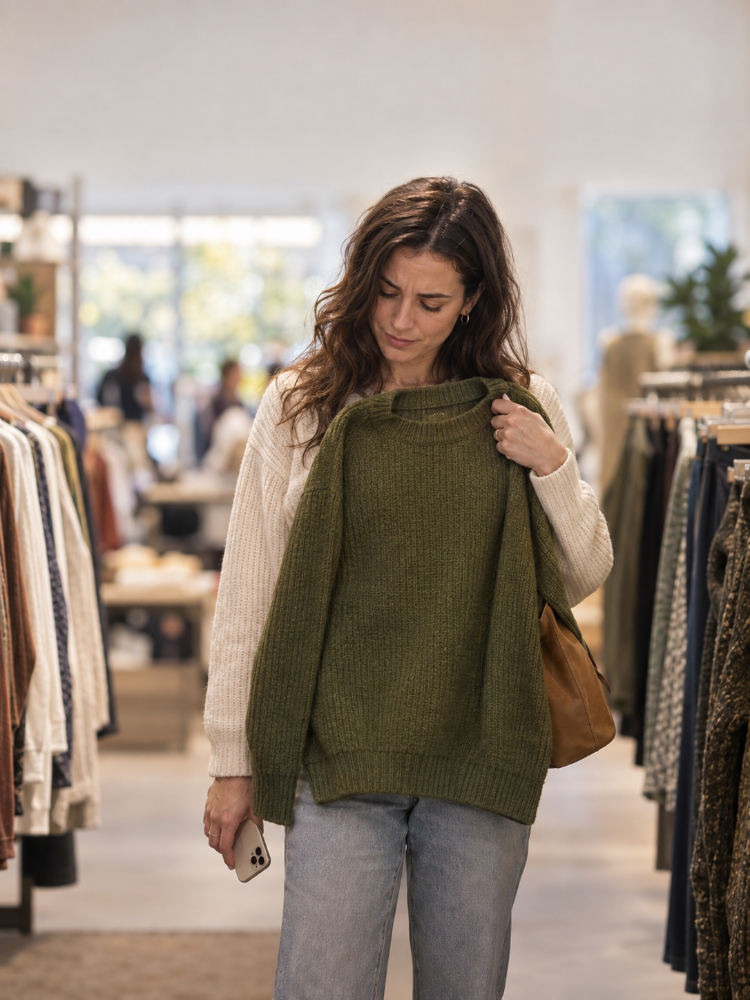
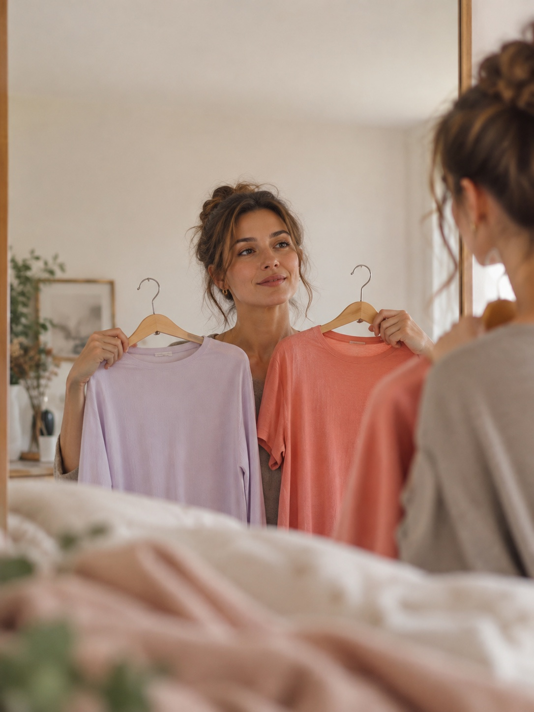
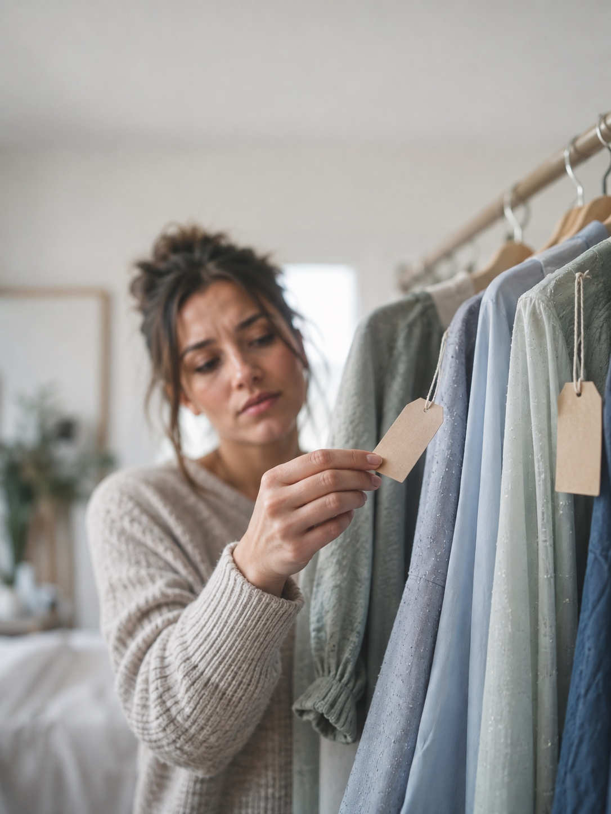
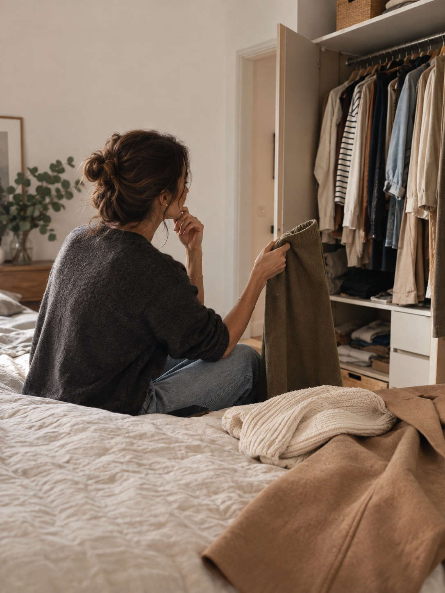
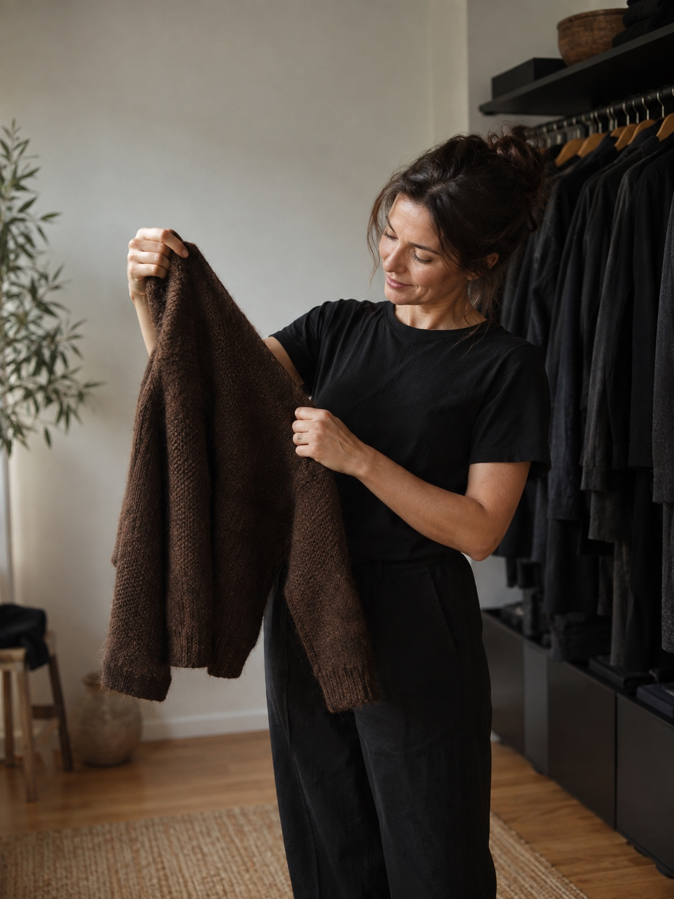
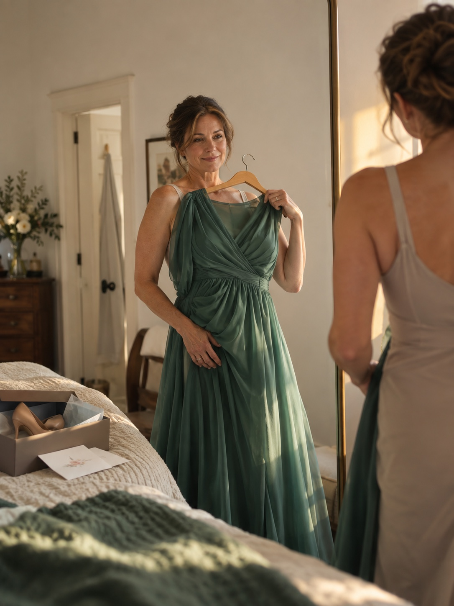

ColorCheck · App Store screenshots V2 · 2026-09-26
Скриншоты по болям: от большей к меньшей
Один кадр — одна боль. Формат как у Cysta r10: заголовок в две строки (боль / обещание), одна фотосцена, телефон снизу, одна карточка результата, короткая сноска. Боли и заголовки ранжировал Jev на 24 синтетических персонах в 6 когортах, по два прохода с обратным порядком вариантов. Альтернативные боли, заголовки и сцены предложил Codex, фото сгенерированы через Codex ImageGen.
Серия · рекомендуемый порядок
8 кадров
Черновые мокапы: HTML-реконструкция поверх черновых сцен. Цифры на карточках — пример, не реальные данные пользователей.






Нужно твоё решение
Порядок: строго по силе боли или с сезоном на втором месте?
- Stuck in the Store? / Scan. Buy or Skip.
- Stop Wasting Money / On Wrong Colors.
- Washed Out? / Wear Your Colors.
- Warm or Cool? / Know for Sure.
- Always in Black? / Meet Your Neutrals.
- Closet Full, Nothing Works? / Ask Your Stylist.
- Wedding Coming Up? / Check Your Dress.
- Another Return? / Check Photo Colors.
- Stuck in the Store? / Scan. Buy or Skip.
- Warm or Cool? / Know for Sure.
- Washed Out? / Wear Your Colors.
- Stop Wasting Money / On Wrong Colors.
- Another Return? / Check Photo Colors.
- Closet Full, Nothing Works? / Ask Your Stylist.
- Always in Black? / Meet Your Neutrals.
- Wedding Coming Up? / Check Your Dress.
- В варианте A в первых трёх кадрах нет цветотипа. При этом «color analysis» — наш главный поисковый запрос, и все конкуренты ставят анализ первым кадром. Человек, который искал анализ, может не узнать его в нашей странице.
- Кадр сезона — второй по силе как первый кадр (0.22). Для TikTok-когорты он первый (0.70), и он же даёт бесплатный вход в приложение.
- «Онлайн» в B поднят на 5-е место: за него готовы платить (0.15), это второе значение после магазина. Правда, почти всё это приходится на online-когорту.
- «Know for Sure» обещает точность, которой у AI-типирования нет. Варианты: оставить со сноской «AI estimate from 3 photos» или взять «Filters Disagree? / 3 Photos. One Answer.» (0.30).
Главная таблица · для производства кадров
Боль → кадр
Строки идут по силе боли. «Слот» — место кадра в рекомендуемом порядке B. Жирным выделен победитель турнира заголовков, рядом с каждым вариантом — его доля выбора.
| # | Боль (её словами) | Боль · Jev | Заголовок · турнир | Фотосцена | Телефон + карточка | Кадр · Jev | Честно ли это |
|---|---|---|---|---|---|---|---|
| 1слот 1 | Стою в магазине с вещью в руках и не понимаю, мой это цвет или нет. Покупаю наугад. | ранг5.56 сила3.40 заплатит0.26 нажмёт0.28 |
|
Магазин, проход между рейлами, женщина ~30 держит оливковый свитер, сомневается; телефон в опущенной руке. |
Экран сканера: камера на свитере, круглая кнопка SCAN (#FF6B6B). BUY BUY · 91% match · «Warm olive suits your Warm Autumn» Сноска: |
1-й кадр0.25 после 1-го0.24 платить за0.47 понятно0.84 верит0.59 |
есть в приложении Сканер и вердикт BUY/SKIP с % есть в приложении. Views/Scanner/ScannerView.swift, Views/Scanner/ScanResultView.swift |
| 2слот 4 | Покупаю вещи, которые на вешалке выглядят отлично, а потом не ношу. Деньги на ветер. | ранг4.83 сила3.31 заплатит0.19 нажмёт0.19 |
|
Рейл в шкафу, блузки холодных оттенков ещё с бирками; рука поднимает бирку, лицо не в фокусе. |
Результат скана: SKIP и объяснение причины. SKIP SKIP · 24% match · Saved $79 Сноска: |
1-й кадр0.11 после 1-го0.16 платить за0.06 понятно0.85 верит0.60 |
есть в приложении Экономия считается по цене, которую ввела сама пользовательница. Прогнозы вида «$80 в месяц» на кадр не выносим. Views/Scanner/ScanResultView.swift (savings badge), Views/Dashboard/SavingsView.swift |
| 3слот 3 | В одних цветах я на фото выгляжу уставшей и серой, и не понимаю, в каких именно. | ранг4.20 сила3.52 заплатит0.08 нажмёт0.09 |
|
Зеркало в спальне, в руках два топа: холодный лиловый и тёплый коралловый. |
Палитра: Best colors + Colors to avoid. Палитра Avoid: icy lilac · Wear: warm coral Сноска: |
1-й кадр0.14 после 1-го0.16 платить за0.05 понятно0.86 верит0.60 |
есть в приложении Лучшие и неподходящие цвета есть в профиле. Сцену перегенерировать: отражение в зеркале не совпадает с героиней. Views/Analysis/ColorResultView.swift (best + worst colors) |
| 4слот 2 | Не знаю свой цветотип. TikTok-фильтры каждый раз говорят разное. Тёплая я или холодная? | ранг4.10 сила3.38 заплатит0.11 нажмёт0.07 |
|
Окно, дневной свет, женщина ~25 делает селфи; на подоконнике лоскуты терракоты, оливы и коралла. |
Season reveal: Warm Autumn, подтон, свотчи палитры. Палитра Warm Autumn · warm undertone · 6 свотчей Сноска: |
1-й кадр0.22 после 1-го0.11 платить за0.06 понятно0.82 верит0.58 |
частично «Know for Sure» обещает точность, которой у AI-типирования нет. Нужна сноска или замена (см. вопрос ниже). Views/Analysis/SelfieView.swift (3 фото), Views/Analysis/ColorResultView.swift |
| 5слот 7 | Ношу только чёрное и нейтральное, потому что не знаю, что ещё мне идёт. | ранг3.71 сила3.39 заплатит0.04 нажмёт0.04 |
|
Шкаф с чёрной одеждой, женщина ~42 достаёт один свитер цвета тёмного шоколада. |
Профиль, прокрученный до Best neutrals. Палитра Your black → dark chocolate · Your white → ivory Сноска: |
1-й кадр0.03 после 1-го0.05 платить за0.01 понятно0.80 верит0.54 |
есть в приложении Блок best neutrals есть в профиле. Models/ColorProfile.swift (BestNeutrals), Views/Analysis/ColorProfileView.swift |
| 6слот 6 | Шкаф забит, но ничего не сочетается. Надеть нечего. | ранг3.60 сила3.28 заплатит0.04 нажмёт0.04 |
|
Край кровати напротив переполненного шкафа; в руке оливковая юбка, на кровати кремовый свитер и пальто цвета camel. |
Чат со стилистом, вопрос про юбку. Чат «Pair the olive skirt with your cream knit and camel coat.» Сноска: |
1-й кадр0.06 после 1-го0.08 платить за0.13 понятно0.82 верит0.58 |
частично Чат знает цветотип, но шкаф не видит. Отвечает только про ту вещь, о которой спросили. Views/Chat/ChatView.swift, Services/ChatService.swift |
| 7слот 8 | Впереди свадьба, собеседование или фотосессия, и нужен цвет, в котором я буду хорошо выглядеть. | ранг3.39 сила3.19 заплатит0.03 нажмёт0.02 |
|
Зеркало, женщина ~50 прикладывает нефритовое платье; на кровати приглашение и коробка из-под туфель. |
Результат скана платья. BUY BUY · 94% match · «Photographs warm and bright on you» Сноска: |
1-й кадр0.04 после 1-го0.04 платить за0.04 понятно0.80 верит0.57 |
есть в приложении Это обычный скан вещи. Отдельного режима «событие» в приложении нет, и кадр его не обещает. Views/Scanner/ScanResultView.swift |
| 8слот 5 | Онлайн цвет один, а приходит другой. Постоянно оформляю возвраты. | ранг3.11 сила2.47 заплатит0.08 нажмёт0.08 |
|
Диван, ноутбук с размытой витриной, рядом вскрытая посылка с серо-голубым платьем. |
Скан скриншота товара из галереи. SKIP SKIP · reads cool grey, not blue Сноска: |
1-й кадр0.12 после 1-го0.14 платить за0.15 понятно0.80 верит0.57 |
частично Скриншот проверить можно. Восстановить настоящий цвет ткани по отретушированному фото нельзя, поэтому нужна сноска. Views/Scanner/ScannerView.swift:127 (PhotosPicker) |
Резерв (не в основных восьми): «Old Colors Look Off? / Refresh Your Palette.». Для когорты 45+ релевантность 0.79, у остальных низкая. Подходит для PPO или отдельной страницы продукта под аудиторию 45+.
Jev · 24 персоны × 2 прохода · 48/48
Все 16 болей
Приглушённые строки не получили своего кадра. Тепловая карта — сила боли по когортам (0–4).
| # | Боль | Ранг | Сила | Самая сильная | Заплатит | Нажмёт Get | Shopper 28–38 | TikTok 18–27 | Capsule 30–45 | Online | 45+ | Уже типирована |
|---|---|---|---|---|---|---|---|---|---|---|---|---|
| 1 | В магазине не понимаю, мой ли это цвет | 5.56 | 3.40 | 0.19 | 0.26 | 0.28 | 3.64 | 2.73 | 3.36 | 3.51 | 3.41 | 3.53 |
| 2 | Покупаю и не ношу, деньги на ветер | 4.83 | 3.31 | 0.22 | 0.19 | 0.19 | 3.82 | 2.74 | 3.27 | 3.34 | 2.83 | 3.10 |
| 3 | В некоторых цветах выгляжу уставшей и серой | 4.20 | 3.52 | 0.10 | 0.08 | 0.09 | 3.58 | 3.21 | 3.57 | 3.35 | 3.81 | 3.40 |
| 4 | Не знаю свой цветотип, фильтры спорят | 4.10 | 3.38 | 0.10 | 0.11 | 0.07 | 3.60 | 2.98 | 3.59 | 3.38 | 3.73 | 2.36 |
| 5 | Ношу только чёрное, другое страшно | 3.71 | 3.39 | 0.04 | 0.04 | 0.04 | 3.36 | 3.21 | 3.56 | 3.32 | 3.61 | 3.22 |
| 6 | Шкаф полный, надеть нечего | 3.60 | 3.28 | 0.05 | 0.04 | 0.04 | 3.65 | 2.71 | 3.44 | 3.10 | 3.05 | 3.11 |
| 7 | Тёплый у меня подтон или холодный? | 3.55 | 3.31 | 0.03 | 0.03 | 0.03 | 3.45 | 3.04 | 3.49 | 3.42 | 3.72 | 2.19 |
| 8 | Важное событие, нужен свой цвет | 3.39 | 3.19 | 0.02 | 0.03 | 0.02 | 3.20 | 2.75 | 3.17 | 3.14 | 3.60 | 3.29 |
| 9 | Палитра есть, но как ей пользоваться? | 3.13 | 3.13 | 0.00 | 0.00 | 0.00 | 3.40 | 2.36 | 3.30 | 2.92 | 3.16 | 3.29 |
| 10 | Онлайн цвет не тот, постоянные возвраты | 3.11 | 2.47 | 0.08 | 0.08 | 0.08 | 2.50 | 1.99 | 2.38 | 3.73 | 2.29 | 2.26 |
| 11 | Боюсь ошибиться с цветом волос | 3.06 | 2.82 | 0.03 | 0.03 | 0.03 | 2.78 | 2.98 | 2.85 | 2.83 | 2.83 | 2.64 |
| 12 | С возрастом прежние цвета не идут | 2.87 | 2.51 | 0.05 | 0.04 | 0.05 | 2.65 | 1.42 | 2.96 | 1.81 | 3.60 | 2.04 |
| 13 | Не знаю свои оттенки тона, румян, помады | 2.81 | 2.81 | 0.00 | 0.00 | 0.00 | 2.73 | 3.08 | 2.79 | 2.68 | 2.85 | 2.81 |
| 14 | Разные приложения дали разные сезоны | 2.69 | 2.33 | 0.06 | 0.04 | 0.05 | 2.15 | 2.76 | 2.44 | 2.30 | 2.52 | 1.91 |
| 15 | Профессиональный анализ стоит $200–800 | 2.60 | 2.60 | 0.00 | 0.00 | 0.00 | 2.75 | 2.30 | 2.52 | 2.72 | 2.88 | 2.14 |
| 16 | Мой сезон скучный, жаль любимых цветов | 2.41 | 2.17 | 0.03 | 0.03 | 0.03 | 2.25 | 1.61 | 2.42 | 2.13 | 2.45 | 1.94 |
Когорты и веса: Shopper .35 · TikTok .15 · Capsule .15 · 45+ .15 · Online .10 · Уже типирована .10. Когорты «45+» и «уже типирована» добавлены к аудитории из CLAUDE.md как проверка.
Почему у этих болей нет кадра
- Тёплый у меня подтон или холодный? — Объединена с кадром сезона: заголовок «Warm or Cool?» выиграл турнир.
- Палитра есть, но как ей пользоваться? — Объединена с магазином: её решает сканер. Сама по себе боль нулевая на выбор и оплату.
- Боюсь ошибиться с цветом волос — Честно показать нечего: гида по волосам нет, только ответ чата. Боль средняя (2.82).
- Не знаю свои оттенки тона, румян, помады — В приложении нет гида по макияжу, а в PDF 3–4 страницы, не 14. Ноль на выбор и оплату.
- Разные приложения дали разные сезоны — «Точного типирования» пообещать нельзя: по данным RESEARCH.md, AI угадывает примерно в 26% случаев. Работаем с этим через тон и сноску, а не отдельным кадром.
- Профессиональный анализ стоит $200–800 — Это аргумент для пейволла («стилист за $200–800»), а не боль для кадра. На выбор и оплату — 0.
- Мой сезон скучный, жаль любимых цветов — Самая слабая боль (2.17). Решается тоном в результате анализа.
Позиционирование
Обещание для подзаголовка
Выбор «скачает и заплатит»: какое обещание скорее заставит скачать и оплатить.
| Обещание | Выбор | Перескажет | Как у всех | Верит |
|---|---|---|---|---|
| Scan clothes before you buy — know in 3 seconds if the color suits you. | 0.44 | 0.47 | 0.62 | 0.67 |
| Stop buying clothes you never wear — every item checked against your colors. | 0.26 | 0.23 | 0.64 | 0.65 |
| A color analysis you can trust — 3 photos, one clear season, and why. | 0.14 | 0.10 | 0.61 | 0.58 |
| A personal color stylist for less than a coffee a week. | 0.08 | 0.02 | 0.67 | 0.62 |
| Find your color season with AI — free, in one minute. | 0.04 | 0.11 | 0.67 | 0.63 |
| Your color palette in your pocket — check any item, in the store or online. | 0.04 | 0.08 | 0.66 | 0.64 |
«Scan before you buy» лидирует с отрывом. «Как у всех» у всех обещаний держится на 0.61–0.67, поэтому отличать нас должна картинка сканера с вердиктом, а не формулировка.
Раунд 3 · победившие заголовки
Какой кадр первым
Персона выбирает один кадр из девяти по трём вопросам.
| Кадр | 1-й | После 1-го | Платить за | Про неё | Понятно | Сильнее всего у |
|---|---|---|---|---|---|---|
| Stuck in the Store? / Scan. Buy or Skip. | 0.25 | 0.24 | 0.47 | 0.77 | 0.84 | Уже типирована 0.55 · Shopper 28–38 0.45 · 45+ 0.16 |
| Another Return? / Check Photo Colors. | 0.12 | 0.14 | 0.15 | 0.80 | 0.80 | Online 0.95 |
| Warm or Cool? / Know for Sure. | 0.22 | 0.11 | 0.06 | 0.77 | 0.82 | TikTok 18–27 0.70 · Capsule 30–45 0.26 · Уже типирована 0.21 · 45+ 0.19 |
| Washed Out? / Wear Your Colors. | 0.14 | 0.16 | 0.05 | 0.83 | 0.86 | TikTok 18–27 0.27 · Shopper 28–38 0.18 · Уже типирована 0.17 |
| Stop Wasting Money / On Wrong Colors. | 0.11 | 0.16 | 0.06 | 0.84 | 0.85 | Shopper 28–38 0.27 |
| Closet Full, Nothing Works? / Ask Your Stylist. | 0.06 | 0.08 | 0.13 | 0.74 | 0.82 | Capsule 30–45 0.34 |
| Wedding Coming Up? / Check Your Dress. | 0.04 | 0.04 | 0.04 | 0.65 | 0.80 | 45+ 0.24 |
| Always in Black? / Meet Your Neutrals. | 0.03 | 0.05 | 0.01 | 0.76 | 0.80 | Capsule 30–45 0.15 |
| Old Colors Look Off? / Refresh Your Palette. | 0.04 | 0.02 | 0.02 | 0.55 | 0.69 | 45+ 0.27 |
Codex · независимый разбор репозитория
Что ещё нашли
- Сканер как таковой уникальным не считается. В кадрах Style DNA уже есть подбор вещей по цвету, у Palette — «уверенность в покупке». Наше отличие — вердикт BUY/SKIP с % и причиной прямо в магазине. Поэтому главный кадр должен показывать именно вердикт.
- Три свободных угла: «цвета изменились с возрастом» (45+), «одно важное событие — одна дорогая покупка» (свадьба) и «первый шаг от чёрного». Все три вошли в таблицу: седина ушла в резерв, остальные два получили кадры 7 и 8.
- Расхождения с CLAUDE.md: PDF-отчёт занимает 3–4 страницы, не 14 (
Services/ShareRenderer.swift). Гидов по макияжу и волосам нет, есть только ответы чата. На скриншотах этого обещать нельзя. - Риск в пейволле:
PaywallView.swiftпоказывает «4.8» и цитату «Saved me from buying a $120 jacket…». Если за ними нет реальных отзывов, в App Store это считается фиктивным социальным доказательством. На скриншоты такие элементы не переносим. - Не показываем на кадрах: подарки другим людям (профиль только один), примерку цвета волос, номер тона тональника.
Метод и ограничения
Как читать цифры
- Это вероятности синтетических суждений модели Jev, а не доли пользователей и не конверсия. Реально проверить можно только через Product Page Optimization в App Store Connect.
- Шкала силы у Jev сжата (почти всё около 3). Поэтому порядок держится на выборах «самая сильная», «заплатит» и «нажмёт Get», а сила только уточняет его.
- Три раунда: боли и позиционирование → турнир заголовков внутри каждого кадра (варианты от Claude и Codex) → выбор первого кадра с победившими заголовками. Устойчивость проверялась обратным порядком вариантов (проходы a и b).
- Фотосцены — черновики Codex ImageGen, не финал. В сценах 3 (washed) и 8 (event) отражение в зеркале не совпадает с героиней: перегенерировать без зеркала или со съёмкой прямо в зеркало. Телефоны на кадрах будут HTML-реконструкцией интерфейса, как в Cysta r11.
- Исходники:
research/screenshots-pains-jev-2026-09-26/:run.mjs,run2.mjs,run3.mjs,analysis*.json,codex-pains.md,frames.json,scenes/.